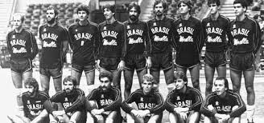

Quando, Onde e Como

O voleibol chegou ao Brasil em 1915, com a primeira partida registrada no Colégio Marista de Recife, em Pernambuco. O esporte se espalhou pelo país através da Associação Cristã de Moços (ACM), transformando-se em uma das modalidades mais vitoriosas e populares da nação, com múltiplos títulos mundiais e olímpicos.
Avançando nos Projetos

Chegada e Organização (1915–1950)1915: Primeiro registro de jogo de vôlei no Recife.Expansão: Clubes e escolas de São Paulo e Rio de Janeiro adotam a prática.1954: Fundação da Confederação Brasileira de Voleibol (CBV), separando a modalidade de outras práticas esportivas gerais.A Era da Geração de Prata (Anos 1980)1984: A seleção masculina conquista a primeira medalha olímpica do Brasil na modalidade (prata em Los Angeles).Inovação: Jogadores brasileiros inventam saques icônicos, como a "Jornada nas Estrelas" (Bernard) e a "Viagem ao Fundo do Mar" (Renan Dal Zotto).